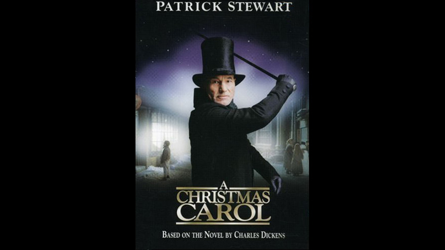

| Character | Actor |
|---|---|
| Ebenezer Scrooge | Patrick Stewart |
| Bob Cratchit | Richard E. Grant |
| Mrs. Cratchit | Saskia Reeves |
| Fred (Scrooge's nephew) | Dominic West |
| Belle (Scrooge's sweetheart) | Laura Fraser |
| Martha Cratchit | Claire Slater |
| Young Boy Cratchit | Barnaby Francis |
| Marley's Ghost | Bernard Lloyd |
| Spirit of Christmas Past | Joel Grey |
| Spirit of Christmas Present | Desmond Barrit |
| Spirit of Christmas Future | Tim Potter |
| Young Scrooge | Kenny Doughty |
| Fan "Fanny" Scrooge | Rosie Wiggins |
| Albert Fezziwig | Ian McNeice |
| Old Joe | Trevor Peacock |
| Mrs. Dilber (Charwoman) | Liz Smith |
| Mrs. Riggs (Laundress) | Elizabeth Spriggs |
| Mrs. Bennett | Celia Imrie |
| Mister Crump (Undertaker) | John Franklyn-Robbins |
| Mr. Williams | Jeremy Swift |
| Topper Haines | Crispin Letts |
| Betsy | Helen Coker |
| Role | Person |
|---|---|
| Director | David Jones |
| Screenplay | Peter Barnes |
Rather than deliberately trying to resemble either the 1938 MGM version or the George C. Scott made-for-TV version in the cheerfulness and "Christmassy" feeling of their settings, the 1999 film takes as its inspiration to the classic 1951 film version with Alastair Sim in the grimness of some of its scenes and set design, although it still includes many cheerful moments. It includes three scenes almost always omitted from other adaptations which are the lighthouse, coal miners, and sailors on a ship at sea, by showing montages with different groups of people in different sections of the country singing Silent Night. The scene of the young couple who are relieved at Scrooge's death is also taken from the original story.